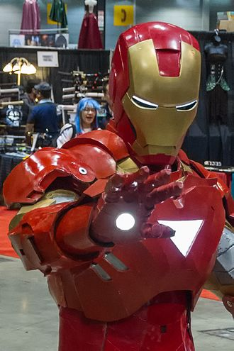

Iron Man es un superhéroe que aparece en los cómics estadounidenses publicados por Marvel Comics. El personaje fue creado por el escritor y editor Stan Lee en colaboración con el guionista Larry Lieber.[3] Los artistas Don Heck y Jack Kirby fueron los encargados de su diseño. Este superhéroe hizo su primera aparición en Tales of Suspense #39 (marzo de 1963) y recibió su propio título en Iron Man #1, en mayo de 1968. En 1963, el personaje fundó el equipo de superhéroes Los Vengadores con Thor, Ant-Man, Avispa y Hulk. Las historias de Iron Man, individualmente y con los Vengadores, se han publicado de manera constante desde la creación del personaje.
Iron Man es el personaje de superhéroe de Anthony Edward "Tony" Stark, un multimillonario magnate empresarial, filántropo estadounidense, playboy y un ingenioso científico e ingeniero, que dirige la empresa de fabricación de armas Industrias Stark. Cuando Stark fue capturado en una zona de guerra y sufrió una herida grave en el corazón, construyó su armadura de Iron Man y escapó de sus captores. Las armaduras de Iron Man le otorgan fuerza sobrehumana, vuelo, proyección de energía y otras habilidades. El personaje fue creado en respuesta a la Guerra de Vietnam como el intento de Lee de crear un personaje agradable a favor de la guerra. Desde su creación, Iron Man se ha utilizado para explorar temas políticos, y las primeras historias de Iron Man se ambientan en la Guerra Fría. El papel del personaje como fabricante de armas resultó controvertido y Marvel se alejó de la geopolítica en la década de 1970. En cambio, las historias comenzaron a explorar temas como el malestar civil, el avance tecnológico, el espionaje corporativo, el alcoholismo y la autoridad gubernamental.[4] Las versiones posteriores de Iron Man han pasado de estos motivos a asuntos contemporáneos de la época,[4]como el terrorismo, la corrupción y la delincuencia en general.
Las principales historias de Iron Man incluyen "Demon in a Bottle" (1979), "Armor Wars" (1987-1988), "Extremis" (2005) y "Iron Man 2020" (2020). También es un personaje principal en las historias de toda la compañía Civil War (2006-2007), Dark Reign (2008-2009) y Civil War II (2016). Han surgido personajes de superhéroes adicionales del elenco de apoyo de Iron Man, incluidos James Rhodes como Máquina de Guerra y Riri Williams como Ironheart, así como villanos reformados, Natasha Romanova como Viuda Negra y Clint Barton como Ojo de Halcón. La lista de enemigos de Iron Man incluye a su archienemigo, el Mandarín, muchos supervillanos de origen comunista y muchos de los rivales comerciales de Stark.
Robert Downey Jr. es el actor encargado de interpretar a este personaje dentro de la saga de películas de Marvel Cinematic Universe: Iron Man (2008), The Incredible Hulk (cameo; 2008), Iron Man 2 (2010), The Avengers (2012), Iron Man 3 (2013), Avengers: Age of Ultron (2015), Capitán América: Civil War (2016), Spider-Man: Homecoming (2017), Avengers: Infinity War (2018), Ralph Breaks the Internet (cameo; 2018), Avengers: Endgame (2019) siendo sacrificado para derrotar a Thanos con las Gemas del Infinito, Spider-Man: lejos de casa (cameo; 2019) y la serie de Disney+ Loki (cameo; 2021). Mick Wingert prestó su voz al personaje en la serie animada What If...? (2021). La interpretación de Downey popularizó al personaje, elevando a Iron Man a uno de los superhéroes más reconocibles de Marvel. Otras adaptaciones del personaje aparecen en películas animadas directas a video, series de televisión y videojuegos.
El debut de Iron Man fue una colaboración del guionista y editor Stan Lee, el guionista Ángel Leonardo, el artista Don Heck, y el diseñador de personajes Jack Kirby. Algunas evidencias demuestran que Iron Man tiene raíces en un Hombre de Hierro anterior creado por Norvell W. Page (escrito bajo el nombre de "Grant Stockbridge"), quien llevaba una armadura robótica y lanzaba rayos de energía desde sus palmas, para su novela Satan's Murder Machines, apareciendo originalmente en diciembre de 1939 en la revista The Spider. De acuerdo con su historia oficial, Stan Lee leyó con avidez la revista The Spider.[7]
En 1963, Lee había estado jugando con la idea de un superhéroe/hombre de negocios.[8] Quería crear al "capitalista por excelencia", un personaje que iría en contra del espíritu de los tiempos y los lectores de Marvel. Stan Lee, George Mair, Excelsior: The Amazing Life of Stan Lee, Simon & Schuster (2002), Lee dijo, «Creo que me propuse un desafío. Era el apogeo de la Guerra Fría. Los lectores, los jóvenes lectores, si había algo que odiaban, era la guerra, era el ejército... Así que tomé un héroe que representaba eso. Era un fabricante de armas, estaba proporcionando armas al ejército, era millonario, era un empresario... Pensé que sería divertido tomar el tipo de personaje que nadie quiere, que no gustaría a ninguno de nuestros lectores, y empujarlos a sus gargantas y hacer que se convierta... en alguien muy popular».[9] Él se dedicó a hacer al personaje un Don Juan rico y encantador, pero con un secreto que lo perseguirá y lo atormentará también.[10] El escritor Gerry Conway dijo, «Aquí tienes este personaje, que en el exterior es invulnerable, es decir, no se puede tocar, pero por dentro está bastante herido. Stan hizo una gran herida en su cara, ya sabes, su corazón estaba roto, literalmente. Pero hay una metáfora que ahí sucede. Y eso es, creo, lo que hizo interesante al personaje».[9] Lee basó este aspecto y personalidad en Howard Hughes, explicando: «Howard Hughes era uno de los hombres más coloridos de nuestros tiempos. Era un inventor, un aventurero, un millonario, Don Juan y, finalmente, un chiflado. Sin ser un loco, él era Howard Hughes».[9]